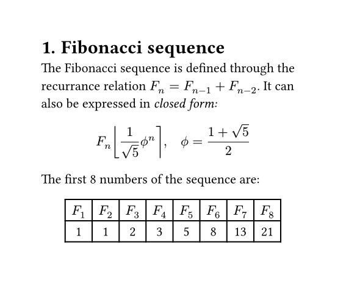

Typstry.jl
A package to access the Typst command-line interface.
See also their website, documentation, and repository.
Features
- Macros to construct Typst strings and commands
- Functions to construct and render documents
Planned
- Convert Julia values to Typst strings
- Explore rendering
- Unicode in the REPL?
- Other environments?
Installation
julia> using Pkg: add
julia> add(url = "https://github.com/jakobjpeters/Typstry.jl")
julia> using TypstryShowcase
julia> document = typst"""
#set page(width: 10cm, height: auto)
#set heading(numbering: "1.")
= Fibonacci sequence
The Fibonacci sequence is defined through the recurrance relation
$F_n = F_(n-1) + F_(n-2)$. It can also be expressed in _closed form:_
$ F_n round(1 / sqrt(5) phi.alt^n), quad phi.alt = (1 + sqrt(5)) / 2 $
#let count = 8
#let nums = range(1, count + 1)
#let fib(n) = (
if n <= 2 { 1 }
else { fib(n - 1) + fib(n - 2) }
)
The first #count numbers of the sequence are:
#align(center, table(
columns: count,
..nums.map(n => $F_#n$),
..nums.map(n => str(fib(n))),
))
""";
julia> render(document);